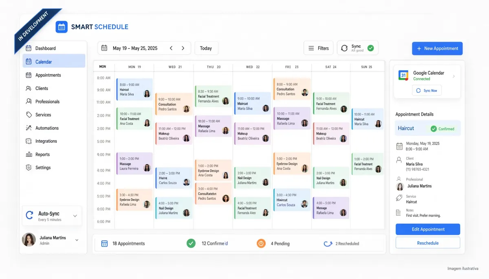

Um resumo rápido do que é este projeto

Smart Schedule é uma aplicação web atualmente em desenvolvimento, pensada para tornar o processo de agendamento mais simples, organizado e automatizado. A proposta é criar uma plataforma onde clientes possam realizar seus agendamentos de forma prática, enquanto os profissionais conseguem visualizar e gerenciar seus compromissos através de uma agenda centralizada.
O projeto está sendo desenvolvido utilizando Laravel e Vue.js, com foco em uma interface intuitiva e uma experiência fluida para diferentes dispositivos. A aplicação contará com um sistema próprio de gerenciamento de horários, permitindo que os agendamentos realizados sejam registrados automaticamente na agenda do profissional responsável.
Além da agenda interna da plataforma, o projeto também prevê integração com o Google Agenda, possibilitando sincronizar compromissos e facilitar ainda mais a organização da rotina dos profissionais.
A ideia é transformar um processo que muitas vezes depende de mensagens, ligações e organização manual em uma experiência mais rápida, centralizada e automatizada, conectando clientes, profissionais e suas agendas em um único sistema.